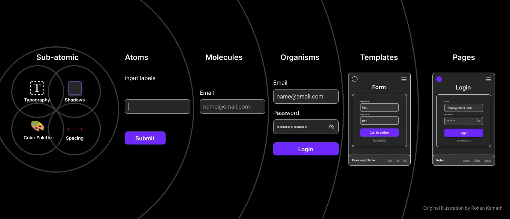
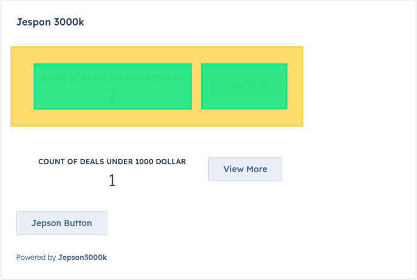

Create a folder where you would like to work on this project. I believe it is important to get comfortable with the terminal so I will demonstrate creating folders and files in the terminal.
In the next slide, we will use the terminal to create all of the folders and files for the initial setup. The files will be empty at this point. We will go back and pour in the code in later steps
We will move to the desktop folder and create a new folder called jepsometer. Then we will move into the jepsometer folder.
cd ~/Desktop && mkdir jepsometer && cd jepsometer
Now that we are in the folder we will be using, let's initialize the HubSpot CLI so that it can communicate with your account
hs init
This will guide you through authenticating the HubSpot CLI with your account. When you are done, you will have a hubspot.config.yml file in your folder
Next step is to create a project which will act as the container for our app in our account. The CLI will ask you a series of questions including name of the project, location and if you wan to use a template. Call your project jepsometer and choose the default location and no template
hs project create
You should now have two files in your folder. hubspot.config.yml and hsproject.json
This file is optional, but will make your life slightly easier as you won't have to navigate to other directories to install dependencies.
From your terminal and still in the main folder, type this command
touch package.json
UI extensions require a private app to function. A single private app can be used for multiple custom cards
From your terminal and still in the main folder, type the following command
mkdir src && cd src
mkdir app && cd app
touch app.json
We are are now at the meat of the project. The extensions folder we are about to create is where we will be building the custom card. For a custom card to work, it needs to in the extensions folder and it requires a minimum of 3 files.
Although a custom card requires a package.json file, this file can be shared amongst multiple cards
Lets create our extensions folder and the files in it
From within the app folder, run the following commands in your terminal
mkdir extensions && cd extensions
touch associated-deals.json
touch AssociatedDeals.jsx
touch package.json
On its own, the front end of the custom card is very powerful and can display a wealth of data about the record it is on and its associations, but if you want to dig deeper into your CRM or if you want to interact with data outside of your CRM, serverless functions are the next step.
In this demo, we will be calling a serverless function to interact with a HubDB table hosted on a different HubSpot account. This hubdb table will control how a website page displays data.
Serverless functions are stored in a folder called app.functions and, similar to the custom card, require 3 files
Let's create the app.functions folder and the files in it
Again, in your terminal, we will need to navigate out of the extensions folder and back into the app folder. The we will create the new folder and files in the new folder
From within the app folder, run the following commands in your terminal
cd .. && mkdir app.functions && cd app.functions
touch thanksKyle.js
touch serverless.json
touch package.json
touch .env
You should now have the structure set up for your custom card. Right now, everything is empty. Let's get to pouring in some content!
You should now have the structure set up for your custom card. Right now, everything is empty. Let's get to pouring in some content!
Remember that optional package.json file we created at the beginning? We are going to use this so we can run
the scripts in the extensions and app.functions package.json file.
Open up the package.json file located
at
the top level of your project in your code editor and add the following
As mentioned earlier, a custom card requires a private app. To create a private app, we are going to fill in the data in the app.json file located in the app folder
Now we are going to pour in the content for the custom card. We will start with the associated-deals.json file located in the extensions folder
Next up, the react file. For now, we are going to create the absolute minimum in this file. We will revisit it later
Finally for our front-end, we are going to pour in the content for the package.json file located in the extensions folder
Now we are going to pour in the content for the serverless function. We will start with the package.json file located in the app.functions folder
Next up, the serverless function file. For now, we are going to create the absolute minimum in this file. We will revisit it later
const axios = require('axios');
exports.main = async () => {}
Finally for our back-end, we are going to pour in the content for the serverless.json file located in the app.functions folder
{
"appFunctions": {
"jepsonupdater": {
"file": "thanksKyle.js",
"secrets": []
}
}
}
We have done a lot! And now we have the minimum required files and content to register this extension with our HubSpot account.
Let's head back to the terminal. Make sure you are in the root directory which would be the one that contains the hsproject.json file. Once you are there, run this command
hs project upload
If all went well, you should be able to login to you account and add this card to contact records!
Now that you have uploaded your card, we will fire up our local dev server so we can build out our cards. With local dev, you can safely build and break you card without fear of the production card being affected.
From the terminal, run the following command
hs project dev
Once you run this command, you can open your HubSpot account and navigate to a contact record. If you have added the custrom card, you will see it with a label above it indicating that you are actively developing this custom card. This is only viewable to you and not anyone else
Let's talk about keeping our react components organized
We can reused these components and swap in different data for the next card
Navigate to the extensions folder and create a new folder called components
Within this folder, we are going to create 5 files.
The first component we will create is the layout component for the card.
// first we need to import the Flex component from the ui-extensions package
import {Flex} from '@hubspot/ui-extensions';
// then we will create a functional component that takes in two props, stats and clicker
export const Layout = ({ stats, clicker }) => {
return (
{stats}
{clicker}
)}
Next, we will build the subcomponents for the layout.
Next, we will build the subcomponents for the layout.
Let's add our components to our custom card
Next up, creating the panel which will be comprised of 2 components: DealPanel.jsx and DealPanelInner.jsx
Go ahead and open up DealPanel.jsx
Moving on to the DealPanelInner.jsx